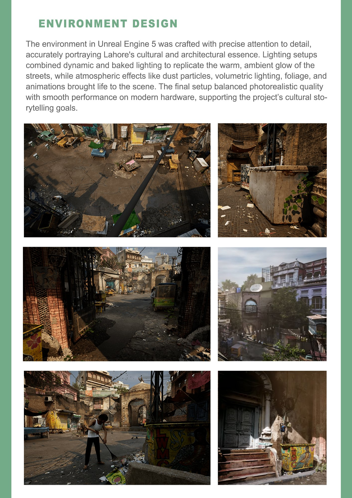
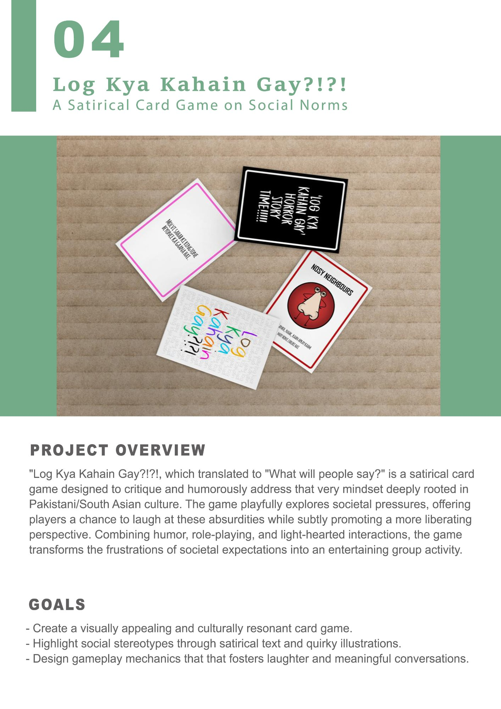

"Log kya kahain gay?" is not really a question — it's a system of social control dressed up as concern.
Log Kya Kahain Gay — "what will people say?" — is a phrase every Pakistani and South Asian person knows. It governs everything from career choices to how you dress to who you marry. It's wielded by relatives, neighbours, colleagues, and strangers. It's anxiety made cultural infrastructure.
This card game doesn't try to dismantle it. It tries something harder and more effective: it makes it funny. Role-playing, storytelling, and communal laughter are how cultures process difficult truths — this game is designed to be that container.
Design Goals
What the game needed to do.
- Be immediately recognisable to South Asian players — the scenarios, characters, and language had to feel like they came from inside the culture, not observations of it.
- Be genuinely funny, not just satirical in tone — actual laughter was the metric of success, not just awareness-raising.
- Create space for real conversation — the best playtests ended with people talking about their own experiences. That was the goal underneath the comedy.
Design Process
From cultural research to card in hand.
I started by mapping the different categories of "log kya kahain gay" pressure — marriage, career, education, physical appearance, lifestyle choices, family reputation — and within each category, collected actual scenarios, phrases, and characters that people across South Asia would recognise. The design challenge was making them specific enough to be culturally resonant but universal enough to be relatable across different South Asian contexts.
Gameplay uses role-playing to activate the comedy: players draw cards and must perform, argue, or narrate in character. A penalty system (tongue twisters, playful punishments) from the Black Deck keeps rounds moving and prevents anyone taking the game too seriously — which is the point.

Design process: concept development, gameplay mechanics, and final card samples — including "Daadi Dangerous" and the horror story deck.
The Card System
Two decks, one catharsis.
White Deck — The Situations
- 45 situation cards — scenarios pulled directly from South Asian social life
- 10 character cards — archetypes like "Daadi Dangerous" and "Nosy Neighbour"
- 5 horror story cards — the most extreme "log kya kahain gay" moments
Black Deck — The Penalties
- 20 penalty cards with tongue twisters and playful punishments
- Keeps the atmosphere lighthearted even when the situations bite
- Forces everyone to stay ridiculous — nobody gets to be too serious

Final packaging design: the box, white deck card backs, and black deck card backs.
Reflection
What I learned.
Specificity creates universality
"Daadi Dangerous" — an exaggerated formidable grandmother archetype — landed in every single playtest. The more culturally specific I made the characters, the more universally relatable they became.
Game mechanics must serve meaning
The role-playing element isn't just a mechanic — it forces players to inhabit the perspectives they're laughing at. That's the real satirical work. Mechanics and meaning were designed together, not separately.
Comedy as a design tool
Designing for sustained laughter — not just one funny moment — is genuinely difficult. Tone, pacing, and the social dynamics of the room all affect whether something lands. This project taught me to design for emotional response, not just function.
The real success metric
The best feedback from playtesting: "we ended up talking about this stuff for an hour after." A game that creates space for real conversation while making you laugh the entire time — that's what I was aiming for.